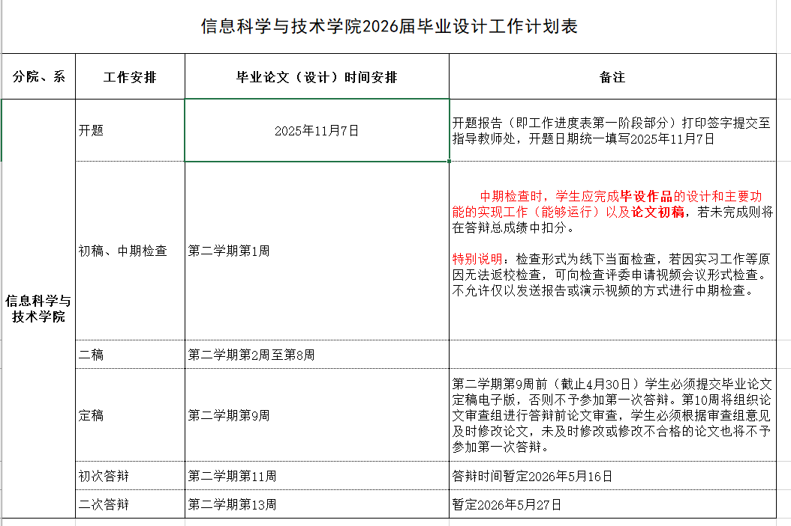
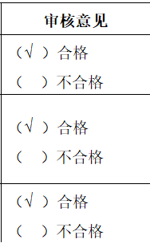
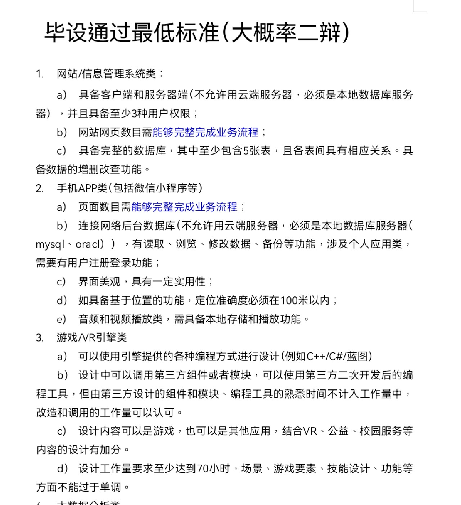
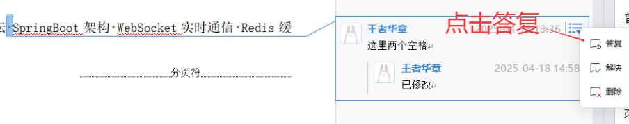
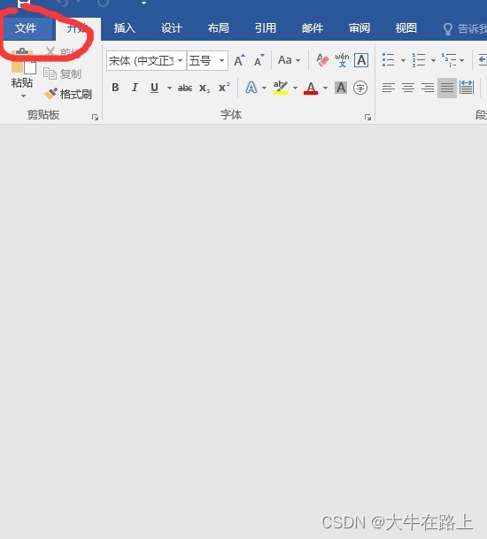
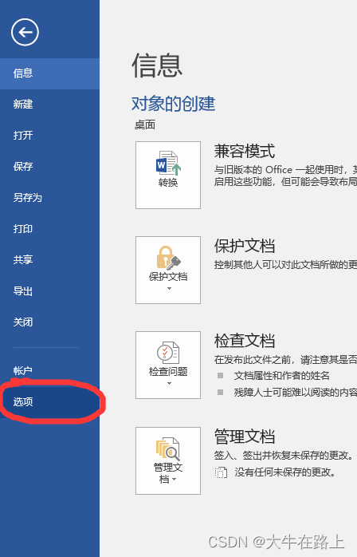
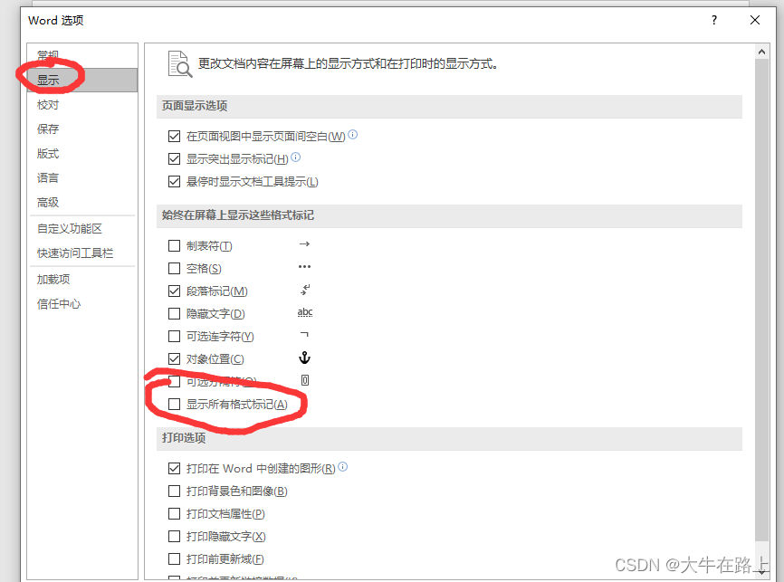
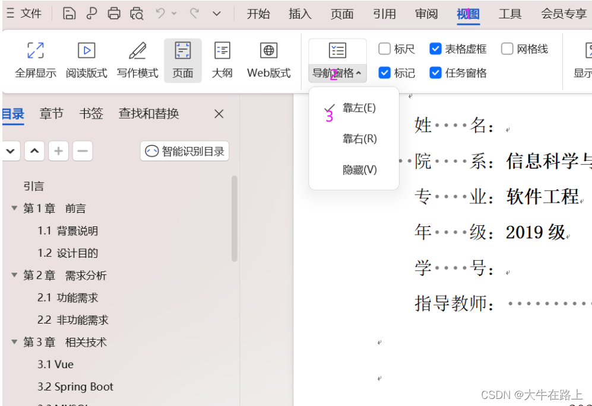
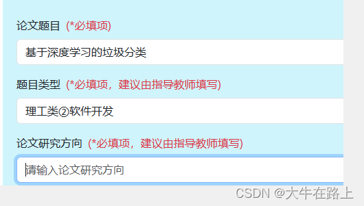
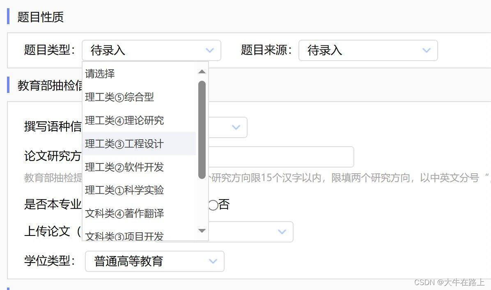

根据学院提供的开题报告模板完成开题报告。
学号+姓名_毕设名称（开题报告），
如：SWE202064张三_基于springboot的学生管理系统（开题报告）
根据资料中的毕设评价标准，对照工作量。以下仅示例部分内容。

请在知网查阅与你方向相似的硕士论文，也可以参考论文撰写教程。
几点提示：
1. 命名格式：题目_第几稿_姓名，如：基于springboot的学生管理系统_第一稿_张三
2. 每个版本都当成定稿版本发过来，格式和内容都写完整，我修改意见的批注不要删除，改完后
图中回复解决方案，定稿后再统一删除。
3. 中文摘要 ≤ 400 字
4. 英文摘要最终定稿后再修改
特别注意：摘要、引言、结论的写作方式！
批注回复示例：
开始调整格式前，请开启所有格式标记：
文件＞选项＞显示＞显示所有格式标记----->这样可以看清特别是空格的要求！



格式调整正确后，可在导航窗格快速定位章节：
视图>导航窗格>靠左（以wps为例）


由于国家抽检会用到里面的信息，请大家务必认真填写。 1）题目性质：根据自己的理解填写 2）教育部抽检信息：这个必须认真填写，具体参考学院发的使用说明（认真看，一个标点都不能有错）

先按评委意见修改论文。
提交方式：http://jgxy.co.cnki.net/，具体提交方式请认真查看知网系统使用说明
（1）论文最终版
命名方式：学号_姓名
提交格式：pdf格式（其他格式都不行！！！！请务必将所有批注删掉）
提交最终版论文时，关键字为必填信息！！！必填！！！
（2）论文以外其他附件（仅需毕业设计作品相关材料，其他表格材料不用上传，若为理论研究可以没有）
以压缩包（zip格式，其他格式不行）形式上传，大小30MB以内，压缩包以“学号_姓名_附件”命名，如 SWE10001_张三_附件.zip。内容包括：
① 若有硬件实物，需要硬件作品设计图、实物照片贴图等。
② 有软件作品的提供本人原创核心代码部分（去除第三方依赖的开源组件、库、素材、输出文件等）。若有无法用代码描述的设计部分可以用截图表述，并将截图整理成pdf格式文件。